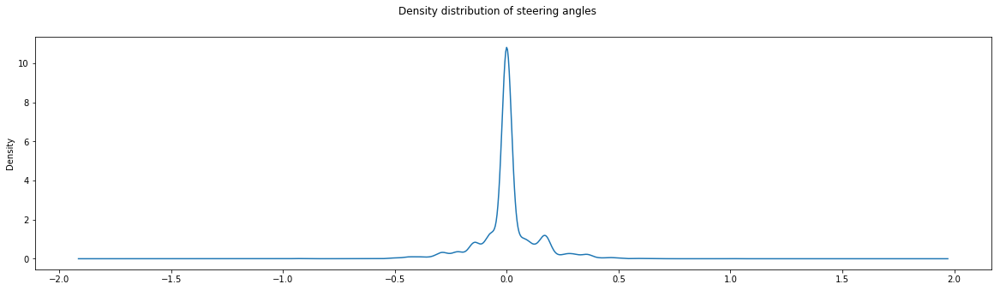
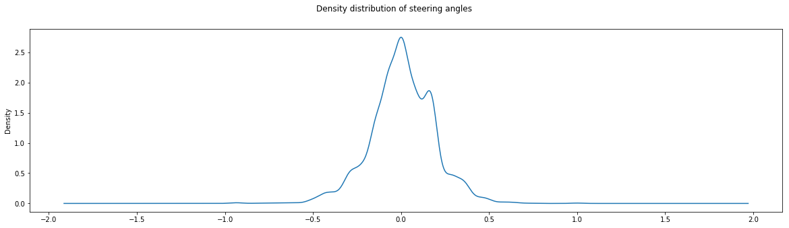

Behavioral Cloning
The goals / steps of this project are the following:
- Use the simulator to collect data of good driving behavior
- Build, a convolution neural network in Keras that predicts steering angles from images
- Train and validate the model with a training and validation set
- Test that the model successfully drives around track one without leaving the road
- Summarize the results with a written report
Video
NOTE: I controlled the car manually at the beginning to make the car drive in reverse around the track
Files Submitted & Code Quality
My submission includes all the required files except for the fact that my model.py file is actually a jupyter notebook. I found the use of jupyter notebook to be quintessential in the exploration and manipulation of data during the dataset preprocessing step.
The code is fairly straightforward except for some of the calls to the pandas API, they have explanation comments as a result.
Model Architecture and Training Strategy
1. Model architecture
My model architecture is as follows:
| Layer | Output Shape | Params |
|---|---|---|
| Cropping | (80, 320, 3) | 0 |
| Normalization | (80, 320, 3) | 0 |
| Max Pooling (2x2) | (40, 160, 3) | 0 |
| Convolution (5x5) | (36, 156, 24) | 1 824 |
| Convolution (5x5) | (32, 152, 36) | 21 636 |
| Max Pooling (2x2) | (16, 76, 36) | 0 |
| Convolution (5x5) | (12, 72, 48) | 43 248 |
| Convolution (3x3) | (10, 70, 64) | 27 712 |
| Max Pooling (2x2) | (5, 35, 64) | 0 |
| Convolution (3x3) | (3, 33, 64) | 36 928 |
| Max Pooling (2x2) | (1, 16, 64) | 0 |
| Flatten | 1024 | 0 |
| Fully Connected (100) | 100 | 102 500 |
| Dropout | 100 | 0 |
| Fully Connected (50) | 50 | 5 050 |
| Dropout | 50 | 0 |
| Fully Connected (10) | 10 | 510 |
| Dropout | 10 | 0 |
| Fully Connected (1) | 1 | 11 |
I based my architecture on Nvidia’s paper on the problem. Getting the amount of parameters right was tricky, I often heavily overfitted to my training data only to find out that the amount of trainable parameters of my model was in the 15 million range. This model has proven to be very successful, I have tried using different architectures heavily based on LeNet but did not find them to be reliable enough to finish a full track.
2. Overfitting reduction
In an attempt to reduce overfitting, I used a lower than default learning rate for my model’s optimizer and added a few max pooling layers in order to heavily reduce the amount of trainable parameters.
The use of a few dropout layers in the fully connected layers also helped reduce overfitting further.
3. Parameter tuning
Hyperparameter tuning was done using trial and error. The model’s parameters were trained using an Adam optimizer with a custom and manually tuned learning rate.
4. Training data
Gathering the right kind of training data proved to be difficult, using only a mouse made it difficult to drive the car and trying to connect an xbox one controller to a Mac running the simulator didn’t work. I tried training multiple neural nets using only the data I collected, but they all made the car drive off the track.
Adding the supplied dataset from the project files made my neural network architecture into a very usable predictive model for steering angles.
Model Architecture and Training Strategy
1. Solution Design Approach
My initial strategy for finding a model architecture was to try different architectures based on what I had learned in previous lessons. Messing around with different architectures helped me build an intuition of how gradients flowed through neural networks as well as how parameter tuning is quintessential.
After having tried LeNet-type architectures with different parameters and architecture details, I kept getting consistently worst results. Some data tweaking later I started getting more convincing results but still was not able to drive a full lap around the track.
In the interest of time, I finally decided to base my architecture on an existing research on the problem.
2. Final Model Architecture
The final model architecture is based on Nvidia’s paper on End to End Learning for Self-Driving Cars.

3. Creation of the Training Set & Training Process
To create a usable dataset, I first collected all of my training data into a single directory. I used data visualization tools to get an idea of what my data consisted of. If we look at the original density of steering angles in our dataset, we can see a problem:

There is massively more data with a 0 degree steering angle. This will introduce a large bias in our predictive model, we must therefore try our best to reduce that bias. I did that by randomly choosing 90% of our data with a steering angle of 0 and removed it from our dataset. Our new steering angles density looks like this:

As we can see the amount of 0 degree steering data is down to almost the same density as other steering angles. There is a slight bias introduced in our predictive model by the slightly higher amount of 0 degree angles in our training data, but that is actually beneficial as we are going straight a large amount of the time.
Afterwards I flattened the dataset to a large amount of image, steering angle pairing by taking the left and right images and adding our subtracting a correction factor found by trial and error.
I then randomly shuffled and split the dataset and made an infinite batch generator for both the training and validation dataset.
Training with a lower learning rate for longer epochs gave me better results and reduced the car’s weaving.
I tried running the model on the second track, it failed almost immediately, this shows that the current predictive model greatly overfit to the current track most probably due to a lack of diversity in our current dataset.
Future improvements
A lot of improvements and experimentations is possible for this model, a few of them are:
- Use a validation dataset that comes from a different track than the one it was trained on
- Use data augmentation (image, angle flipping) to have more data
- Diversify our dataset with real world data or data from a different track, try gathering data from different quality settings in the simulator
- Attempt a reinforcement learning approach to the problem as described in this paper
- Use different optimizer-level techniques such as L2 regularization and learning rate decay